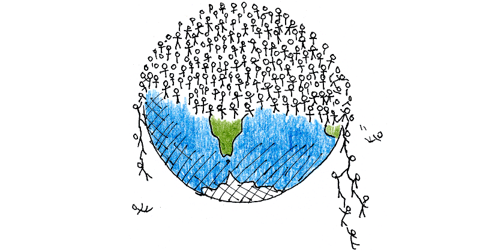

Factores bióticos y abióticos.
Permanentemente el ambiente y los seres vivos están en una mutua relación, donde queda claro que el ambiente influye sobre los seres vivos. A esto se le conoce como factores condicionantes ambientales. Estos factores determinan las adaptaciones, la gran variedad de especies de plantas y animales, y la distribución de los seres vivos sobre la Tierra. Los factores ambientales se clasifican en abióticos (no vivos) y bióticos (vivos), ambos deben estar en constante equilibrio, ya que la alteración de alguno de ellos desequilibraría todo el entramado en el ambiente.
Factores abióticos.
Son los factores del medio ambiente físico, se clasifican en tres grupos:
+ Factores energéticos: son la fuente de energía que utilizan los seres vivos para llevar a cabo funciones, puede iniciarse con la captación de luz solar para los organismos fotosintéticos o con la degradación de materia para algunas bacterias.
+ Factores climáticos: se refiere a los factores que regulan las condiciones climáticas en general. Entre estos factores tenemos la luz solar, la temperatura, el viento y la lluvia, que interactúa con la temperatura en la regulación de las condiciones climáticas.
+ Factores del sustrato: tal y como se indica, son aquellos relacionados directamente con el medio donde se desarrollan los organismos, el agua y el suelo y son: los nutrientes y el pH. Los nutrientes son las sustancias inorgánicas utilizadas por las plantas y los organismos inferiores. Las sales minerales como los nitratos, fosfatos y carbonatos son ejemplos de esas sustancias. El pH proporciona la información sobre la acidez y alcalinidad de los suelos así como del agua.
Factores bióticos.
Lo conforman todos los seres vivos presentes y se pueden clasificar en:
Productores: se les conoce como autótrofos, organismos capaces de formar su alimento a partir de CO2, agua y sales minerales. En este nivel la fuente de energía es la luz solar. En un ecosistema, todas las plantas se clasifican como productores.
Consumidores: Son organismos heterótrofos porque no pueden sintetizar sus propios alimentos a partir de solamente compuestos inorgánicos, por lo que para llevar a cabo sus funciones metabólicas, se alimentan de los productores o de algún otro tipo de consumidor. Todo animal es un consumidor.
Desintegradores o Reductores: utilizan como fuentes nutritivas las excreciones y los cadáveres de organismos, liberando sales minerales a partir del proceso de mineralización de la materia orgánica; se encargan de la descomposición y reincorporación de materias primas al ecosistema. Entre los reductores tenemos a la lombriz de tierra, a los hongos y las bacterias.
En nuestro planeta, la vida marina es la más abundante y la menos conocida. Entre los organismos acuáticos se encuentran 3 grandes grupos:
Plancton Fitoplancton: Son bacterias, hongos microscópicos y algas como las diatomeas: las algas pardo-doradas, las algas verdes y las algas verde-azuladas.
Zooplancton. El más importante es el Krill. Incluye protozoos y pequeños crustáceos, medusas, gusanos y moluscos, además de huevos y larvas de muchas especies animales.
Bentos: Los organismos bentónicos son seres vivos que se fijan al fondo del mar, formado por algas como laminaria y animales como corales, caracoles, pulpos, estrellas de mar, almejas, etc.
Necton: Son seres nadadores, como peces, pingüinos, delfines, cocodrilo, caguama, oso polar, mantarrayas, etc.
Niveles de organización de la materia.
Nivel químico.
-
Subatómico: este nivel es el más simple de todo y está formado por electrones, protones y neutrones, que son las distintas partículas que configuran el átomo.
-
Atómo: es el siguiente nivel de organización. Es un átomo de oxígeno, de hierro, de cualquier elemento químico.
-
Moléculas: las moléculas consisten en la unión de diversos átomos diferentes para fomar, por ejemplo, oxígeno en estado gaseoso (O2), dióxido de carbono, o simplemente carbohidratos, proteínas, lípidos...
Nivel celular.
-
Celular: las moléculas se agrupan en unidades celulares con vida propia y capacidad de autorreplicación.
Nivel tisular.
-
Tisular: las células se organizan en tejidos: epitelial, adiposo, nervioso, muscular...
Nivel orgánico.
-
Organular: los tejidos están estructuras en órganos: corazón, bazo, pulmones, cerebro, riñones...
-
Sistémico o de aparatos: los órganos se estructuran en aparatos digestivos, respiratorios, circulatorios, nerviosos...
NIvel individual.
-
Organismo: nivel de organización superior en el cual las células, tejidos, órganos y aparatos de funcionamiento forman una organización superior como seres vivos: animales, plantas, insectos,...
Nivel ecológico.
-
Población: los organismos de la misma especie se agrupan en determinado número para formar un núcleo poblacional: una manada de leones, o lobos, un bosque de arces, pinos...
-
Comunidad: es el conjunto de seres vivos de un lugar, por ejemplo, un conjunto de poblaciones de seres vivos diferentes. Está formada por distintas especies.
-
Ecosistema: es la interacción de la comunidad biológica con el medio físico, con una distribución espacial amplia.
-
Paisaje: es un nivel de organización superior que comprende varios ecosistemas diferentes dentro de una determinada unidad de superficie. Por ejemplo, el conjunto de vid, olivar y almendros características de las provincias del sureste español.
-
Región: es un nivel superior al de paisaje y supone una superficie geográfica que agrupa varios paisajes.
-
Bioma: Son ecosistemas de gran tamaño asociados a unas determinadas características ambientales: macroclimáticas como la humedad, temperatura, radiación y se basan en la dominancia de una especie aunque no son homogéneos. Un ejemplo es la taiga que se define por las coníferas que es un elemento identificador muy claro pero no homogéneo, también se define por la latitud y la temperatura.
-
Biosfera: es todo el conjunto de seres vivos y componentes inertes que comprenden el planeta tierra, o de igual modo es la capa de la atmósfera en la que existe vida y que se sustenta sobre la litosfera.
Atributos de una población y de una comunidad.
La Dinámica de Poblaciones es la especialidad de la Ecología, que se ocupa del estudio de los cambios que sufren las poblaciones biológicas en cuanto a tamaño, dimensiones físicas de sus miembros, estructura de edad, el sexo y otros parámetros que las definen, así como los factores ambientales que causan esos cambios y los mecanismos por los que se producen.
Todas las especies biológicas, por su la capacidad reproductiva, están dotadas para producir mayor número de descendientes que los necesarios para mantener el tamaño de la población. En ausencia de limitaciones impuestas por el medio, el destino natural de una población es su crecimiento exponencial. En la práctica, la Resistencia Ambiental evita el incremento poblacional aportando obstáculos, como la escasez de agua, las condiciones climáticas extremas, la escasez de recursos (nutrientes, áreas silvestres destruidas, enfermedades o depredadores), etc., que provocan mecanismos de control del crecimiento, hasta alcanzar el equilibrio.
Concepto de población.
Pero ahora, ¿cómo podemos definir el concepto de población?.
Se puede definir como un conjunto de organismos o individuos que coexisten en un mismo espacio y tiempo, que comparten ciertas propiedades biológicas (básicamente ser de la misma especie), las cuales producen una alta cohesión reproductiva y ecológica del grupo. La cohesión reproductiva implica el intercambio de material genético entre los individuos. La cohesión ecológica se refiere a la presencia de interacciones entre ellos, resultantes de poseer requerimientos similares para la supervivencia y la reproducción, ocupando un territorio o espacio en donde obtiene sus recursos.
Hacia 1835, la humanidad alcanzó los 1.000 millones de habitantes, pero la población se duplicó en tan solo un siglo. En la actualidad, la población humana mundial se incrementa a razón de 1.000 millones cada década, y la proporción de tiempo amenaza con ser incluso más reducida.
Natalidad:
Es la capacidad que tiene una poblaciónde aumentar el número de individuos. Esto depende en gran parte de las condiciones del medio.
Factores que determinan el tamaño de la población:
3. Número de nacimientos y muertes por unidad de tiempo.
4. Tiempo medio de supervivencia de los individuos.
Natalidad máxima potencial:
Natalidad por hembra en edad reproductiva o por 1.000 individuos bajo las condiciones más favorables que puedan hallarse.
Índice de natalidad:
Número de nacimientos de individuosde una población en un tiempo dado.
Mortalidad:
Mortalidad mínima teórica para una población es el número de muertes que se producirían si todas se debieran a la vejez.
Índice de mortalidad:
Número de muertes de individuos de una población en un tiempo dado.
Densidad de la población:
Es el número de individuos por unidad de superficie o de volumen.
Tasa de crecimiento:
Es la diferencia entre tasa de natalidad y tasa de mortalidad.
Las migraciones:
Es el desplazamiento periódico de un grupoo población de animales desde una regióna otra con retorno.
Crecimiento poblacional.
El crecimiento de las poblaciones está determinado por diversos factores químicos, físicos e incluso genéticos. Los cambios en el tamaño de las poblaciones se denominan índices o tasas de crecimiento y se expresan mediante gráficas de crecimiento poblacional. La tasa de crecimiento suele calcularse restando la tasa de mortalidad a la de natalidad en una población y referenciando este dato a cierto. De acuerdo con sus peculiaridades y su situación ambiental, las poblaciones exhiben esencialmente dos formas de crecimiento: el exponencial o en “J” y el logístico, sigmoide o en “S”.
La curva de tipo sigmoidal presenta tres fases principales:
• Fase lenta (I), es el periodo inicial de crecimiento lento, en ésta los organismos se acomodan a su nuevo ambiente.
• Fase logarítmica (II), se presenta un crecimiento exponencial rápido debido a que la población se ha ajustado perfectamente al medio.
• Fase de equilibrio (III) o de estabilización, la resistencia ambiental se manifiesta gradualmente, hasta lograr mantener a la población en un nivel de equilibrio con sólo pequeñas fluctuaciones en torno a la capacidad de carga.

La huella hídrica y la industria alimentaria.
La huella hídrica es un indicador del uso de agua dulce que hace referencia tanto al uso directo del agua de un consumidor o productor, como a su uso indirecto. La huella hídrica puede considerarse como un indicador integral de la apropiación de los recursos de agua dulce, ya que se utiliza para medir el volumen total de agua dulce usado para producir los bienes y servicios producidos por una empresa, o consumidos por un individuo o comunidad. El uso de agua se mide en el volumen de agua consumida, evaporada o contaminada, ya sea por unidad de tiempo para individuos y comunidades, o por unidad de masa para empresas. La huella hídrica evalúa tanto el uso de agua directo como el indirecto y se puede calcular para cualquier grupo definido de consumidores (por ejemplo, individuos, familias, pueblos, ciudades, provincias, estados o naciones) o productores (por ejemplo, organismos públicos, empresas privadas o el sector económico).
Factores limitantes.
Los factores limitantes son las cosas que previenen que una población aumente demasiado. Por ejemplo, 10 conejos pueden vivir en un hábitat que tenga suficiente agua, cobertura y espacio para mantener a 20 conejos, pero si no hay suficiente alimento para 10 conejos la población no aumentará. En este ejemplo el factor limitante es el alimento.
La comida no es el único factor que puede limitar el crecimiento de la población. Por ejemplo, en cierta área puede haber suficiente alimento para mantener a mil pájaros, pero solamente hay sitios adecuados para anidar a un ciento de aves. O tal vez en el área hay abundante comida, agua, cubierta y espacio para mantener a una gran población de faisanes, pero los depredadores son el factor limitante.
Los factores limitantes están muy unidos a la capacidad de carga. Muchas especies de animales pueden incrementar su número muy rápido y pueden exceder temporalmente la capacidad de carga de su hábitat. Esto tiene como resultado que los animales entren en estrés, mueran de hambre, sufran enfermedades, depredación, parásitos, tengan una baja reproducción y también causen daños al hábitat. Por ejemplo, una multiplicación de ratas pueden comerse rápidamente toda la vegetación de una marisma. Cuando la vegetación se acaba, el alimento se vuelve el factor limitante y las ratas pueden morirse de hambre o mudarse a otra área. Hasta que la vegetación vuelva a crecer, la marisma tendrá una capacidad de carga reducida para las ratas.